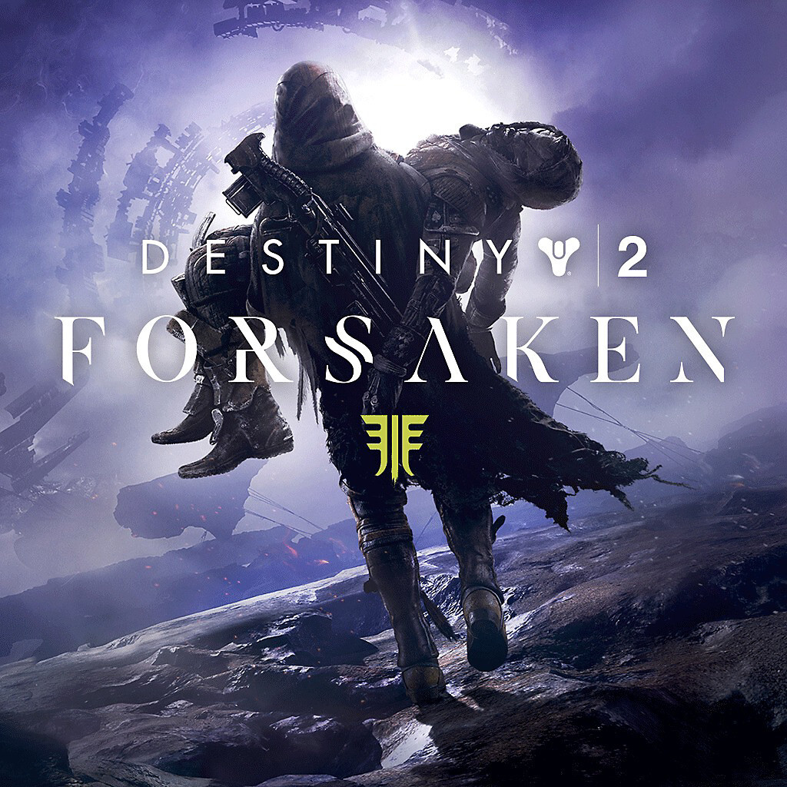
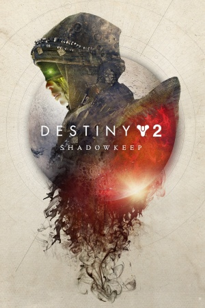
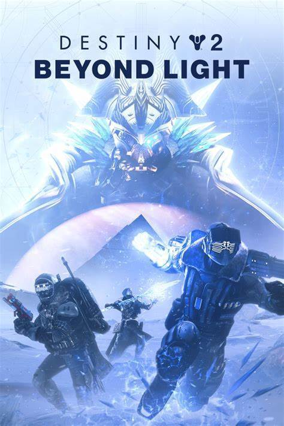
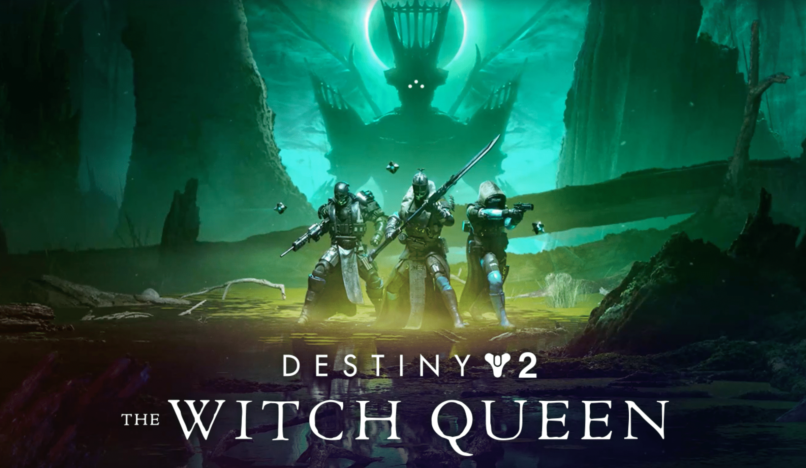
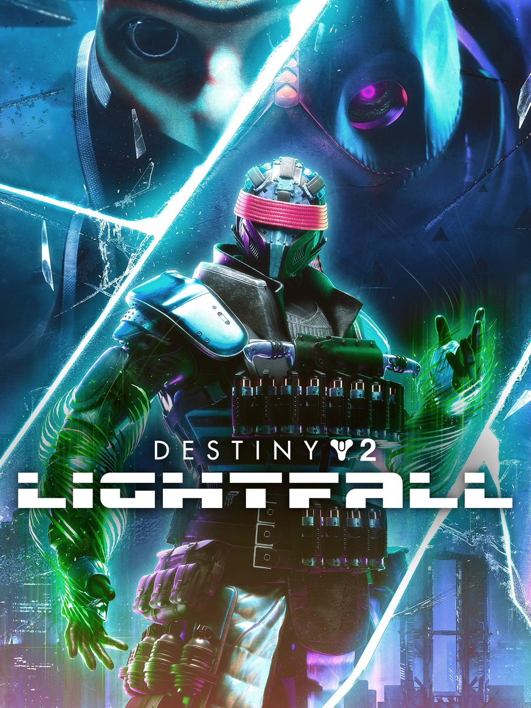

Destiny 2 Expansions
Curse of Osiris
first major expansion was called "Curse of Osiris." It was released in December 2017, a few months after the base game's launch. In "Curse of Osiris," players journeyed to Mercury to investigate a legendary Warlock known as Osiris who had been exiled from the Vanguard for his unorthodox beliefs and actions. The expansion introduced a new storyline focusing on Osiris and his investigations into the Vex. Players explored the Infinite Forest, a simulated reality created by the Vex, and battled against new Vex enemies and bosses.

Warmind
Warmind is the second expansion for Destiny 2, released in May 2018. The expansion's storyline revolves around the player Guardian's journey to Mars to investigate the reawakening of Rasputin, an ancient Warmind AI with immense power. The Guardian allies with Ana Bray, a Guardian Hunter and member of the secretive Bray family, to uncover the mysteries surrounding Rasputin and the Hive threat on Mars. Warmind introduced a new endgame activity called Escalation Protocol, a horde mode-style event where players face waves of increasingly difficult enemies. Completing Escalation Protocol encounters rewards players with unique weapons and armor sets.

Foresaken
Forsaken is widely regarded as one of the best expansions in the Destiny franchise. Released in September 2018, it brought a bunch of new content, features, and improvements to the game. Here's a quick summary of the story, the expansion's storyline centered around the player Guardian's pursuit of revenge against Uldren Sov, the prince of the Awoken who was responsible for the death of Cayde-6, one of the beloved Vanguard mentors. Players ventured into the lawless region of the Reef called the Tangled Shore and eventually to the Dreaming City, an ancient Awoken stronghold, to confront Uldren and the forces behind him.
ShadowKeep
Shadowkeep's story revolves around the return of the Hive on the Moon, triggered by the reawakening of the Pyramid ships, ancient vessels of the Darkness. Players return to the Moon, a location from the original Destiny, to investigate the source of the Hive resurgence and confront new threats lurking in the shadows. Shadowkeep features a new campaign that explores the mysteries of the Moon and the resurgence of the Hive. Players uncover secrets buried beneath the lunar surface and confront powerful Hive champions, including the Nightmares, manifestations of past trauma and fears.
Beyond Light
Beyond Light is a major expansion released in November 2020, marking the start of the game's fourth year of content. Beyond Light's story revolves around the arrival of Eramis, the Fallen Kell of Darkness, on the icy moon of Europa. Players venture to Europa to confront Eramis and her Fallen army, who seek to harness the power of the Darkness to reclaim their former glory. The expansion introduces Europa, a frozen moon of Jupiter, as a new playable destination. Europa is a vast and treacherous landscape filled with secrets, mysteries, and dangerous foes. Players explore Europa's frozen surface and delve into its underground facilities to uncover the secrets of the Darkness.
30th Anniversary
"The Bungie 30th Anniversary Event in Destiny 2 is additional content that fits somewhere between a season and a full expansion. It isn’t designed to tell a lengthy story or expand to a fully new location, but it does provide a large and exciting release of gear weapons and activities. All of this celebrates Bungie’s storied history as a developer and wraps in armaments, easter eggs, and straight-up recreations of iconic gear from the likes of Halo, Vanilla Destiny, and lesser-known games like Marathon." -
Witch Queen
The Witch Queen expansion released in february 22, 2022 brings a new campaign that delves into the mysterious and complex character of Savathûn, the Witch Queen herself. Players embark on a journey to uncover her secrets and thwart her dark plans. The expansion introduces a new destination called "Savathûn's Throne World." Players explore this enigmatic realm filled with unique environments, enemies, and challenges. This introduces weapon crafting, a new feature that allows players to forge and customize their weapons. This system enables players to modify weapon stats, perks, and appearances to suit their preferences and playstyles.
Lightfall
Lightfall was released february 27th, 2023. "It revolves around the exiled Cabal emperor Calus, a recurring character throughout Destiny 2, now a Disciple of the Witness, as he, the Witness, and their army of Shadow Legion Cabal and Tormentors attack the secret, technologically advanced human city of Neomuna on Neptune to procure a mysterious being called the Veil to herald a second Collapse. The expansion added a second Darkness subclass for players called Strand, with powers based on unraveling, suspending, and severing opponents via manipulation of reality through an extra-dimensional matrix called the Weave."
